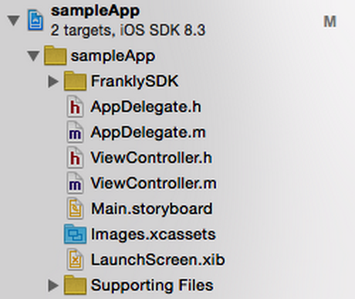
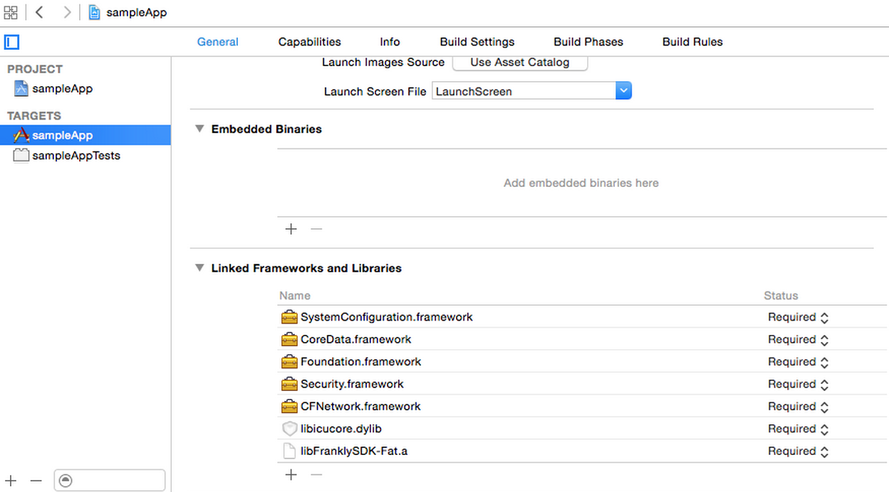
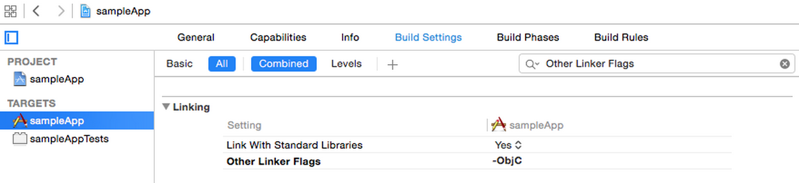

Before Implementing the Frankly SDK
- You’ll need to obtain an
appKeyandappSecretbefore implementing the Frankly SDK. These are required for authenticating with our server. If you don’t have these, please contact us at platform-support@franklychat.com. - Your server will need to be able to generate a JSON Web Token (JWT). To learn more about how to generate a JWT, click here.
Basic Concepts
At the center of Frankly’s conceptual model is the Room, where chat happens. Rooms belong to Roomlists, and Users can subscribe to Rooms.
Inside of a room, a user can send three kinds of messages depending on their role:
- A standard chat message.
- An Announcement, which is sent by the brand.
- A Sticky Message, a message sent by the brand which pins to the top of the room
once it reaches the top of the screen.
- Sticky Messages are shown with the brand’s App Avatar.
- New Sticky Messages will replace the last pinned Sticky Message after reaching the top.
iOS SDK
Installing with CocoaPods (recommended)
Adding FranklySDK to your project using CocoaPods is easy. Make sure to install CocoaPods on your computer if you haven’t already. Continue to the SDK install step once you have CocoaPods installed.
1 | sudo gem install cocoapods |
Once you’ve installed CocoaPods, just add the following to your Podfile and run pod install. You’re done!
1 | pod 'FranklySDK', '~> 1.2' |
Traditional Installation
Grab the SDK by going to the [Downloads]: downloads.html, then add the FranklySDK Folder to your Xcode project.

Link the following libraries and frameworks by accessing the General tab in the Project File. Under Linked Frameworks and Libraries, add the following:
-
libicucore.dylib -
CFNetwork.framework -
Security.framework -
Foundation.framework -
CoreData.framework -
SystemConfiguration.framework

Update your project’s Build Settings by accessing the Build Settings tab in the Project File. Make sure your filter is set to All. Search for Other Linker Flags and set it to “-ObjC.“

Try Building your Project. If Building Succeeds, let’s move on to Initializing the SDK. If Building Fails, please check your steps and make sure you’ve completed all the steps.
Initializing the iOS SDK
In your AppDelegate.m file, import the FranklySDK.h:
1 2 | #import “AppDelegate.h” #import “FranklySDK/headers/FranklySDK.h” |
In the AppDelegate.m file under the application:didFinishLaunchingWithOptions method, add the following:
1 2 3 4 5 6 7 8 9 10 11 12 | (BOOL)application:(UIApplication *)application didFinishLaunchingWithOptions:(NSDictionary *)launchOptions { // serverType is one of the following FRSDKServerType enum values // // FRSDKServerTypeTest // FRSDKServerTypeProduction // [FranklySDK initializeSDKWithServerType: FRSDKServerTypeProduction]; return YES; } |